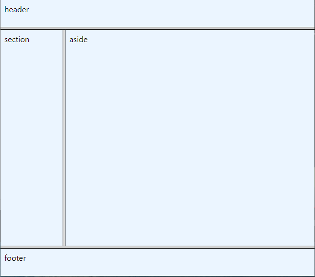
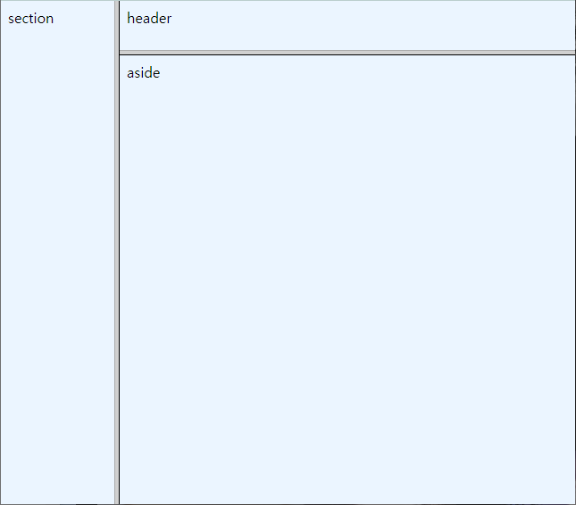
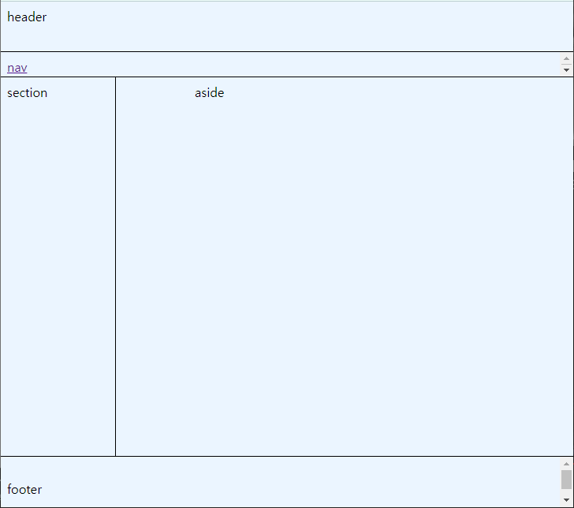

1. 프레임 <frameset> <frame> </frameset> ① 프레임에 들어갈 문서 만들기 _hrader.html <body bgcolor="#EBF5FF">header</body> _nav.html <body bgcolor="#EBF5FF"><a href="https://www.jbnu.ac.kr/kor" target="main">nav</a></body> _section.html <body bgcolor="#EBF5FF">section</body> _aside.html <body bgcolor="#EBF5FF">aside</body> _footer.html <body bgcolor="#EBF5FF">footer</body> a 태그의 target 속성 : 지정된 링크 문서 frame 태그의 name 속성 : 프레임의 이름(링크된 문서가 지정된 프레임에 표시) _top : 해당 링크가 브라우저 전체에 표시 _blank : 새로운 창에 표시 _parent : 현재창의 부모창에 표시 _self : 현재 자신의 창에 표시 ② 세 프레임으로 나누어진 페이지 상 30%, 하 70%(좌 20%,우 80%) <frameset rows="10%, 80%,10%"> <frame src="_header.html"> <frameset cols="20%, 80%"> <frame src="_section.html"> <frame src="_aside.html"> </frameset> <frame src="_footer.html"> </frameset> HTML 적용 시  좌 20%, 우 80%(상 30%,하 70%) <frameset cols="20%, 80%"> <frame src="_section.html"> <frameset rows="10%, 90%"> <frame src="_header.html"> <frame src="_aside.html"> </frameset> </frameset> HTML 적용 시  ③ header, nav, section, aside, footer로 나누어진 프레임 문서 <frameset border="1" bordercolor="black" rows="10%, 5%, 75%, 10%"> <frame src="_header.html"> <frame src="_nav.html"> <frameset cols="20%, 80%"> <frame src="_section.html"> <frame src="_aside.html" name="main" marginwidth="100"> </frameset> <frame src="_footer.html" marginheight="30"> </frameset> HTML 적용 시  frameset rows="10%, 5%, 75%, 10%" : 세로로 4개의 프레임으로 나눔 값 : 픽셀값 또는 % 기능 : 화면을 상하로 분할 frameset rows="70,50%,*" : 화면을 세 개로 분리 후 가장 위 70픽셀, 가운데50%, 나머지 맨 아래 할당 frameset cols="20%,80%" : 왼쪽 프레임에 20%, 오른쪽 프레임에 80% 값 : 픽셀값 또는 % 기능 : 화면을 좌우로 분할 frame src="보여줄 문서" : 각 프레임에 보여줄 문서 지정 값 : 문서의 위치 기능 : 해당 프레임에서 보여줄 문서의 위치 지정 border=“두께” : 경계선의 두께 값 : 픽셀 기능 : 프레임간 경계선의 두께 지정 bordercolor=“black” : 경계선 색 값 : RGB 코드 또는 색이름 기능 : 프레임 테두리 색 지정 name 값 : 프레임 이름 기능 : 해당 프레임의 이름 지정 frame src="화일위치" name="이름“ marginwidth 값 : 픽셀값 > 1 기능 : 해당 프레임의 좌우 여백 지정 marginheight 값 : 픽셀값 > 1 기능 : 해당 프레임의 상하 여백 설정 scrolling=”no“ 값 : auto/yes/no 기능 : 프레임의 스크롤파 표시 지정 frame src="화일위치" scrolling="no“